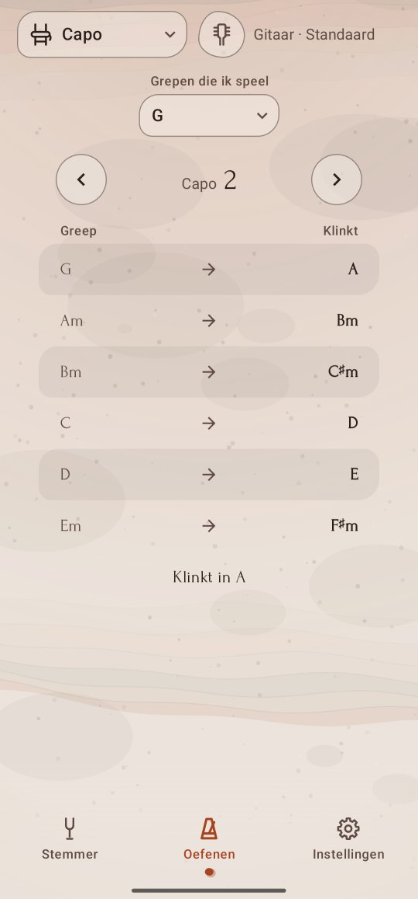

Capo
Het nummer staat in A, maar je speelt liever de G-grepen die je kent? Kies je grepen, verschuif de capo, en Twangle laat zien hoe elke greep klinkt en in welke toonsoort je zit.
De plek van de capo vinden
- Tik op het tabblad Oefenen, dan linksboven op de functieknop, en kies Capo.
- Kies onder Grepen die ik speel de toonsoort van de grepen die je vingers kennen: C, D, E, G, A, Dm, Em of Am.
- Tik op › om de capo een fret omhoog te zetten, op ‹ om hem omlaag te zetten, van Geen capo tot fret 11.
- Stop als de regel onder de tabel de toonsoort van het nummer noemt, bijvoorbeeld Klinkt in A.
De tabel
Hij toont de zes akkoorden die je het meest speelt in de toonsoort van je grepen, elk met het akkoord dat hij met de capo laat klinken: Greep links, Klinkt rechts. Met G-grepen en de capo op fret 2 klinkt je G als A, je Am als Bm, enzovoort, zoals op de afbeelding. Lees de akkoorden van het nummer rechts en speel de grepen links.
Tik op een rij om die greep te openen in Akkoorden, in de stemming die je speelt.
Goed om te weten
- Akkoorden worden geschreven zoals de toonsoort ze schrijft: E♭, niet D♯, in een nummer in E♭.
- Fret 12 zou dezelfde akkoorden geven als geen capo, een octaaf hoger, dus de capo stopt bij 11.
- Twangle onthoudt je grepen en de plek van de capo.
- De tabel is in elke stemming dezelfde, want een capo verhoogt elke snaar evenveel; het schema dat een rij opent, wordt voor jouw stemming uitgerekend.
- De korte snaar van de 5-snarige banjo zit nog niet in de tabel; bij de banjo staat dat op de plek van de tabel.
Voor wie het wil weten: de som erachter
Elke fret verhoogt een snaar een halve toon, en een capo verhoogt alle snaren tegelijk. De fret van de capo is dus het aantal halve tonen van de toonsoort van je grepen omhoog naar die van het nummer: van G naar A is 2, van C naar E♭ is 3. Grepen gaan alleen omhoog, dus een nummer dat lager staat dan je grepen gaat het octaaf rond: een nummer in E♭ is D-grepen op fret 1, C op 3, A op 6, G op 8 of E op 11. Mineurnummers houden mineurgrepen: C mineur is Am-grepen op fret 3.
De zes akkoorden zijn de gebruikelijke van een toonsoort: in majeur de trappen I, ii, iii, IV, V en vi (in G: G, Am, Bm, C, D, Em), in mineur i, III, iv, v, VI en VII.
